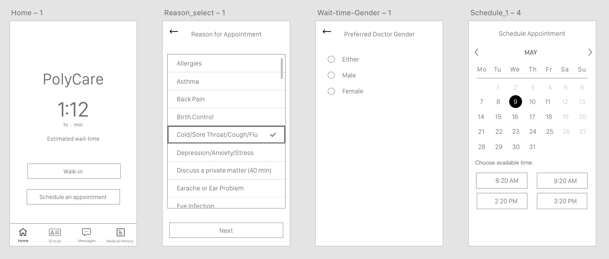
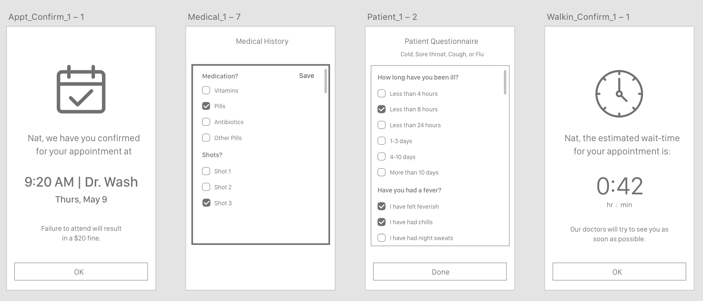
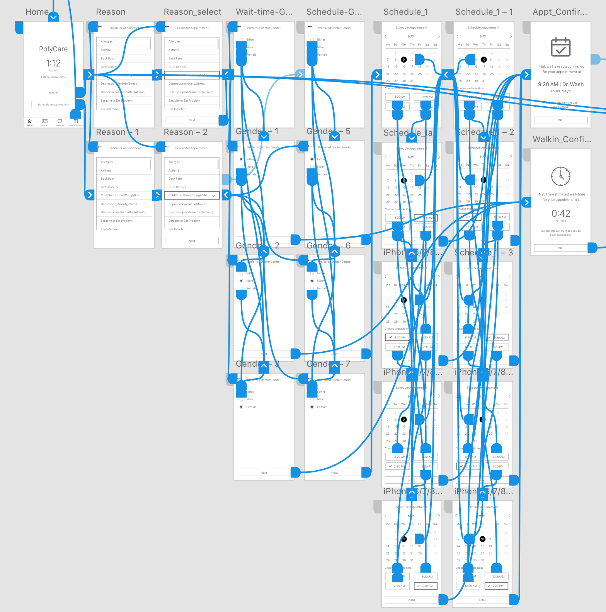

Role
Team
Software
Skills
UI/UX Designer
Alexa Risen
Adobe XD, Axure
UX Design, Affinity Mapping, Interviewing,
Usability Testing, Branding, Prototyping
There is a lack of communication between the Cal Poly Health Services providers and students which produces unnecessary friction throughout the appointment process. Currently, different tools are used for a variety of means, such as check-in computers, online portals and direct calls. This results in miscommunication, time-wasted, and negative experiences.
We believe that by creating an app that allows users the ability to schedule appointments, message doctors, fill out patient questionnaires, view prescriptions, scan their poly ID card, video call with doctors, and lastly, view lab results, we will achieve a more positive and seamless experience for users interacting with the Cal Poly Health Services. We will know this to be true when students leave a higher positive review of the experience.
We created an affinity map to get a complete picture of our early research process. We were able to showcase trends, themes, and area of opportunity for discovery and improvement.
We performed a competitive analysis to compare what other health centers offer and establish what makes the Cal Poly Health Center unique.
Together, we interviewed six individuals to gain a better understanding of our target users’ experiences at the health center.
Some of our key findings included:
We created two personas based on the six individuals we interviewed. They are both Cal Poly students, but each have slightly different goals and frustrations.
After learning the major goals and frustrations our users, we decided to prioritize the features for the minium viable product based on our users.
We created user flowchart to consider how the user will navigate through our app. We had to think about what happens to the user before and after they visit a screen.
We created initial sketches of main screens. These were quick, cheap, and easily changeable. It helped solidify our ideas.
We quickly translated the sketches into low fidelity wireframes so we could nail down the layout of the app. It displays the visual hierarchy of information without any distractions like typefaces, colors, and visuals.
 We conducted our first round of Guerrilla testing to find any critical usability issues.
Overview
We are designing an app to reduce the digital friction at the Cal Poly Health Center. We will not be testing you, we will be only testing the system to make sure it is easy-to-use and user-friendly.
Scenarios & Tasks
Natalie has a sore throat and thinks it might be strep throat. She wants to go into the health center to get it tested to see if it is strep throat. Natalie does not like waiting in the health center though because she does not like being around the sick people and is afraid of getting more sick. She would like to make an appointment and be seen right away. She would prefer to have the appointment in the morning so she can study all day afterward.
Task 1 → Schedule an appointment.
Kevin keeps getting a sore throat and is wondering if it is a bacterial infection. He can only go in on Thursday since he has class and basketball practice the other days of the week. On Thursday morning he plans to check-in on the Health Center app for a walk-in so that he does not have to type in his information at the computers in the health center.
Task 2 → Check-in for a walk-in
Natalie has symptoms of strep throat and wants to be seen at the health center to get a throat culture. She always likes to schedule appointments so she doesn't have to wait a long time at the health center. She schedules her appointment through the app. Later, she realizes she forgot to include a couple items in her medical history. She reopens the app to edit her medical information.
Task 3 → Edit your medical history
Completion Rate
| Participant | Task 1 | Task 2 | Task 3 |
|---|---|---|---|
| Participant 1 | Yes | Yes | No |
| Participant 2 | Yes | Yes | No |
| Participant 3 | Yes | Yes | No |
| Participant 4 | Yes | Yes | Yes |
| Participant 5 | Yes | Yes | Yes |
| Participant 6 | Yes | Yes | Yes |
| Completion | 100% | 100% | 50% |
We applied our unified design and built out all necessary tasks as the second round of usability testing would be more robust. This usability test would be testing the app’s ability to schedule appointments, message doctors, fill out patient questionnaires, view prescriptions, scan a user’s poly ID card, video call with doctors, and view lab results.
Visit the live prototype link here.
Or click around below!
We tested 6 individuals for our hi-fi prototype of the Cal Poly Health Center app. Users were given a packet of testing information which included the overview of the study, consent forms, tasks, SUS survey, and post-test interview questions.
Tasks
Task 1 → You have a sore throat and would like schedule an appointment with the Health Center on May 9th in the morning after 9am.
You’ve been sick for less than 24 hours. Your symptoms include a sore throat and coughing. You’ve only tried Ibuprofen (Advil). You’ve had the flu shot this year.
Task 2 → You have a sore throat and am on your way to the health center. You would like to do a walk-in appointment as you get there.
Task → You’re at home with a fever and would like to video call a doctor to discuss how miserable you’re feeling.
You’ve been sick for less than 24 hours. Your symptoms include a sore throat and coughing. You’ve only tried Ibuprofen (Advil). You’ve had the flu shot this year.
Task 4 → Check your lab results from March.
Task 5 → Add your Poly ID information.
Task 6 → You have a new message from Dr. Matson. Communicate to her your appreciation for her advice.
Completion Rate
| Participant | Task 1 | Task 2 | Task 3 | Task 4 | Task 5 | Task 6 |
|---|---|---|---|---|---|---|
| Participant 1 | Yes | Yes | Yes | Yes | Yes | Yes |
| Participant 2 | Yes | Yes | Yes | Yes | Yes | Yes |
| Participant 3 | Yes | Yes | Yes | Yes | Yes | Yes |
| Participant 4 | Yes | Yes | No | Yes | Yes | Yes |
| Participant 5 | No | Yes | Yes | Yes | Yes | Yes |
| Participant 6 | Yes | Yes | No | Yes | Yes | Yes |
| Completion | 83.33% | 100% | 66.67% | 100% | 100% | 100% |
We also created graphs of time to complete tasks, SUS scores, demographic survey, and number of errors per task.
Based on our user tests and findings, we made the "Request Doctor on Call" button larger and added a note in the confirmation screen that the user would be receiving a confirmation email for their appointment.
For this app to be truly effective in reducing the digital friction at the Health Center, the center would need to make some changes in the task duties of their doctors and practitioners. There would need to be a doctor on call for video call discussions with potential patients. A new technology for scanning Poly ID through the phone would need to be installed. However, these are plausible changes that should not be difficult to implement.
We learned how every single step of UX design requires thoughtful decision making and a human-centered design approach. Overall, this case study was incredibly beneficial in helping us lay the groundwork down of a standard UX design approach. It shows how strong design is very dependent on qualitative and quantitative research.
At the beginning of this project, we limited ourselves to the functions of the app that we felt could be implemented immediately and were most important, which were walking-in and scheduling an appointment. After creating the lo-fidelity wireframe, we realized we should be thinking outside of the box more and implemented several more of the features we had discussed in our feature prioritization to the hi-fidelity prototype. We wish we had thought to do this sooner rather than later in the process. However, because of our initial focus of “walk-in” and “schedule an appointment” features we were able to really perfect them.